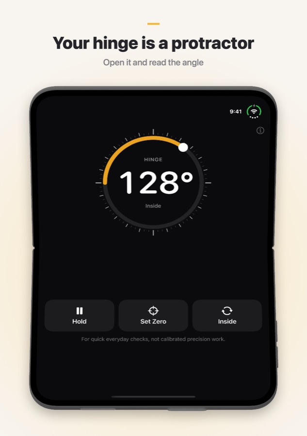
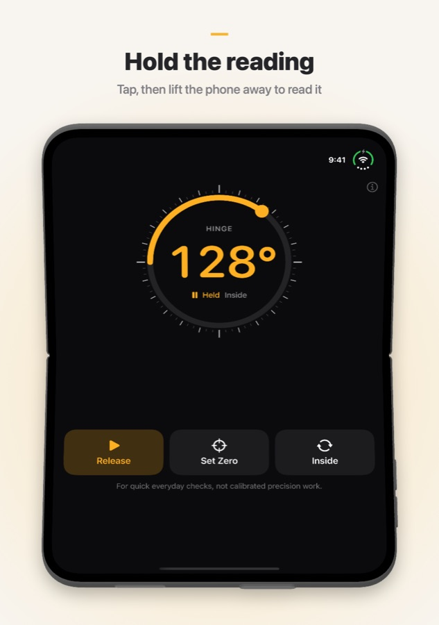
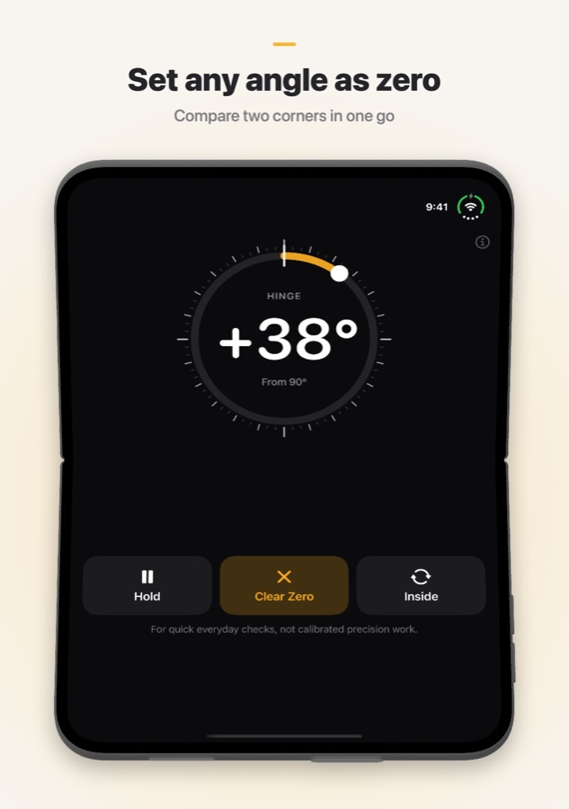

Fold Angle
Your folding iPhone already knows how far it's open. Fold Angle turns the hinge into a protractor: set the phone into a corner, against a door, or over the edge of a box, and read the angle between the two halves. On other iPhones and iPads it works as a tilt meter.
Requires iOS 17 or later.
Download


Support
Have a question, found a bug, or need help with the app? Reach out. We read every message.
Frequently Asked Questions
- Which devices does it work on?
Fold Angle is built for iPhone Duo, where it reads the hinge angle directly. On other iPhones and iPads it works as a tilt meter: it shows how far the device leans from level, using the motion sensors. - How do I keep a reading?
Tap Hold to freeze the number, then lift the phone away and read it. Tap Release to go back to live readings. You can also double-tap the number. - What does Set Zero do?
It makes the current angle the new zero, so you can compare two corners or measure how far a door swings. Tap Clear Zero to go back to absolute angles. - What are Inside and Outside?
Inside is the angle between the two screens. Outside is the angle on the back of the fold (360° minus the inside). Tap the button to switch. - Lying flat, it shows about 2° instead of 0°.
In tilt mode the camera bump lifts one end of the phone. Tap Set Zero on the flat surface first and measure from there, or lay the phone on its screen. - I don't feel the taps.
Fold Angle taps lightly every 15° and firmly at exactly 90°. If you feel nothing, check that Settings → Sounds & Haptics → System Haptics is on. - How accurate is it?
It's made for quick everyday checks, not calibrated precision work. For anything that has to be exact, confirm with a real protractor or level. - Does it collect my data?
No. Fold Angle has no account, no servers and makes no network requests. Sensor readings stay on your device.
Screenshots



Legal
Privacy Policy
Last Updated: October 2026
Introduction
Fold Angle is built around a simple principle: your data belongs to you. This Privacy Policy explains what information the app accesses and how it is handled. In short, we never receive any of it.
Sensors
Fold Angle reads the hinge angle (on iPhone Duo) and the motion sensors (on other devices) only to show the angle on screen. These readings are processed on your device and are never stored, uploaded, or shared.
No Data Collection
We do not collect, store, track, or process any personal information. The app does not require an account or any form of registration.
No Internet Connection
Fold Angle works entirely offline. The app makes no network requests.
Purchases
Any purchases are handled entirely by Apple through the App Store. We never receive your Apple ID, payment method, or any other payment information.
Third-Party Services
Fold Angle does not use any third-party analytics, advertising, or tracking services. No data is shared with any third party.
Children's Privacy
Because no personal data is collected, Fold Angle complies with the Children's Online Privacy Protection Act (COPPA) and similar regulations worldwide.
Changes to This Policy
We may update this Privacy Policy from time to time. Changes are effective immediately upon posting. We encourage you to review this page periodically.
Contact Us
If you have any questions about this Privacy Policy, contact us at: support [at] hoshinosoftware [dot] com
Terms of Service
Last Updated: October 2026
Acceptance of Terms
By downloading or using Fold Angle, you agree to be bound by these Terms of Service. If you do not agree, please do not use the app.
License
Hoshino Software grants you a personal, non-transferable, non-exclusive license to use Fold Angle on your Apple devices in accordance with these terms and Apple's App Store Terms of Service.
Permitted Use
You may use Fold Angle only for lawful purposes. You agree not to use the app in any way that violates applicable laws or regulations.
Not a Precision Instrument
Fold Angle is meant for quick everyday checks. Readings depend on your device's sensors and can be off by a degree or more. Do not rely on it where an error could cause harm, damage, or loss.
No Warranty
Fold Angle is provided "as is" without warranty of any kind, express or implied. We do not guarantee that the app will be error-free, uninterrupted, or suitable for any particular purpose.
Limitation of Liability
To the fullest extent permitted by applicable law, Hoshino Software shall not be liable for any direct, indirect, incidental, special, or consequential damages arising from your use of or inability to use Fold Angle.
Changes to These Terms
We may update these Terms of Service from time to time. Continued use of the app after changes are posted constitutes your acceptance of the revised terms.
Governing Law
These terms are governed by the laws of the jurisdiction in which Hoshino Software operates.
Contact Us
If you have any questions about these Terms of Service, contact us at: support [at] hoshinosoftware [dot] com